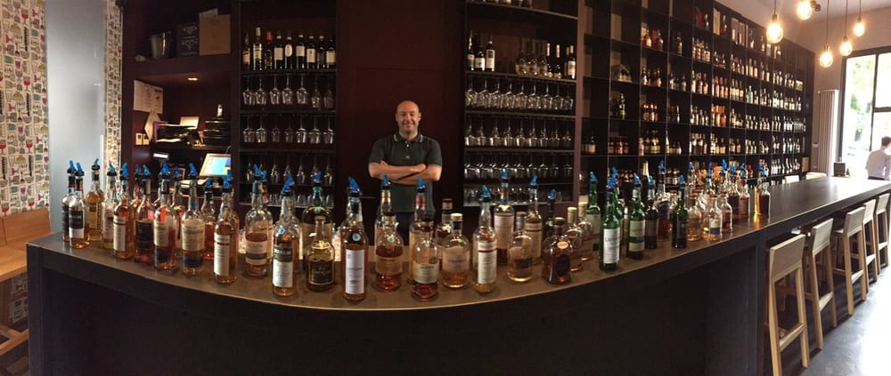
Whisky & birre
Il malto è la radice della birra e del whisky. Un centinaio di etichette di whisky, sempre alla giusta temperatura, e una lista di birre artigianali scelte una per una.
4,3 · 104 recensioni
Enoteca & whiskeria · a due passi da Conciliazione
Due materie, un solo bancone: circa 200 vini e 100 whisky, birre artigianali, aperitivi e taglieri. Il lato umano del buon bere.
Il nome, spiegato

Il malto è la radice della birra e del whisky. Un centinaio di etichette di whisky, sempre alla giusta temperatura, e una lista di birre artigianali scelte una per una.
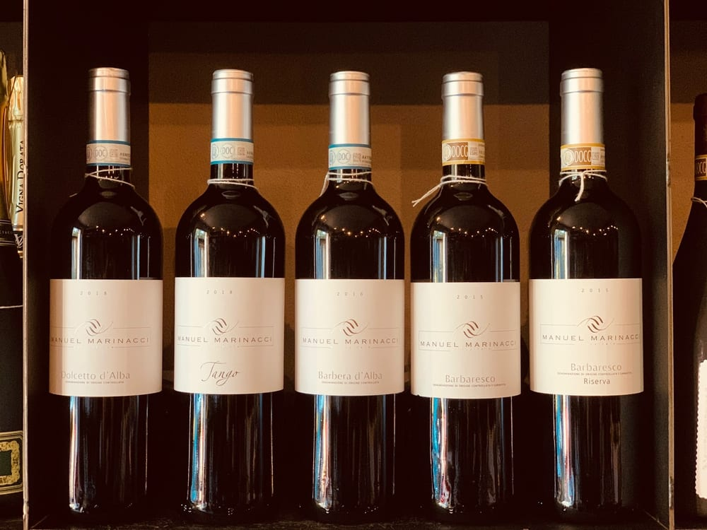
L'uva è il vino: circa 200 etichette, spesso fuori dalla grande distribuzione. Un delirio di bottiglie a riempire le pareti, dal calice quotidiano alla chicca da scoprire.
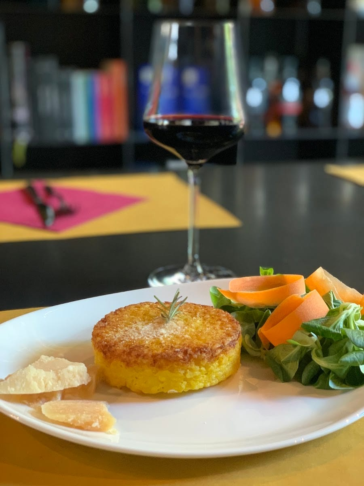
Al bancone
Appoggiati al grande bancone si ritrovano estimatori di vini pregiati e whisky rari, ma anche chi cerca solo un aperitivo giusto e raffinato. Con due proprietari che ti mettono in mano l'etichetta adatta a te.
Degustazioni guidate, taglieri di qualità, e la voglia di ritrovare il gusto del consiglio — quello che con le vendite online si è perso di vista.
Vini al calice
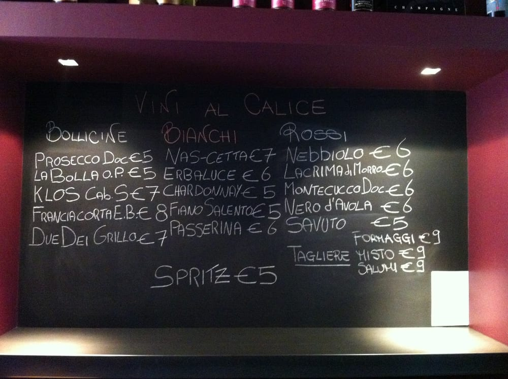
Un delirio di bottiglie
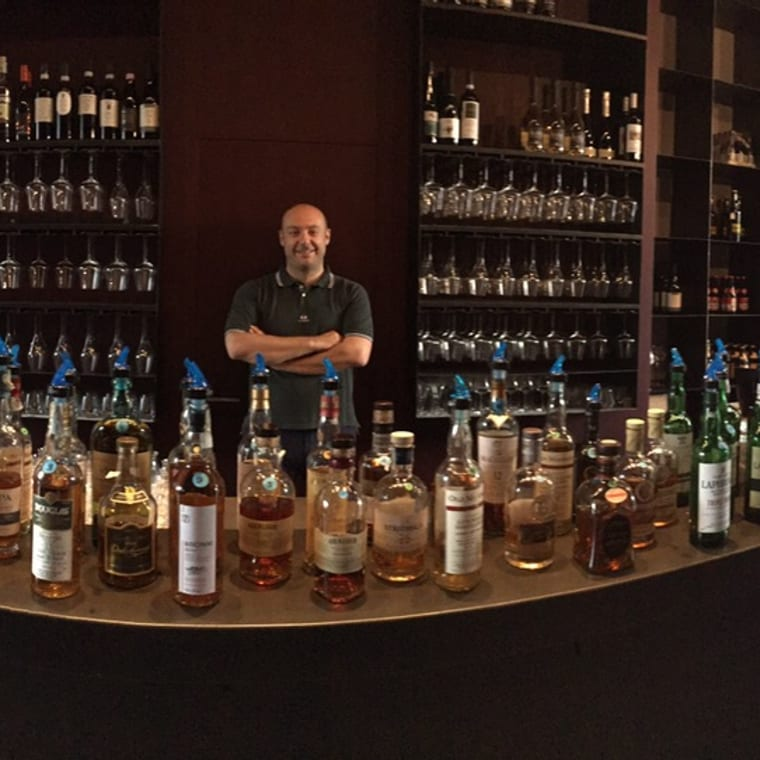
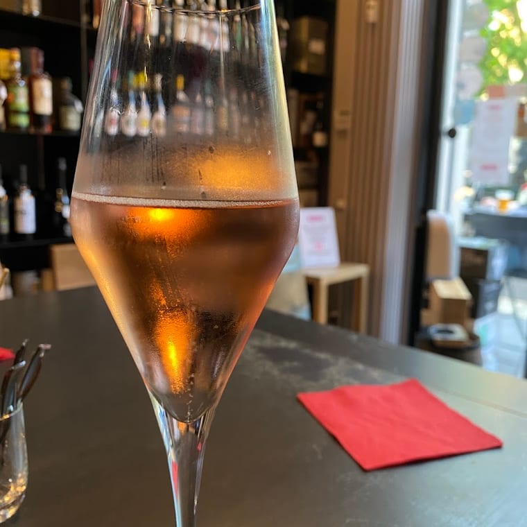
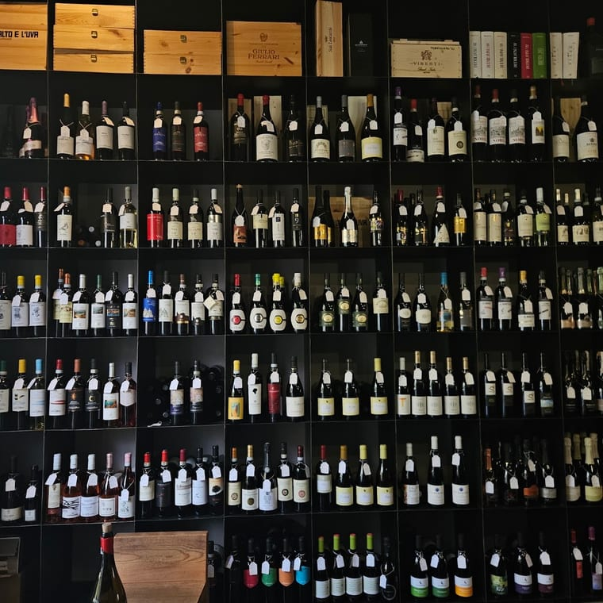
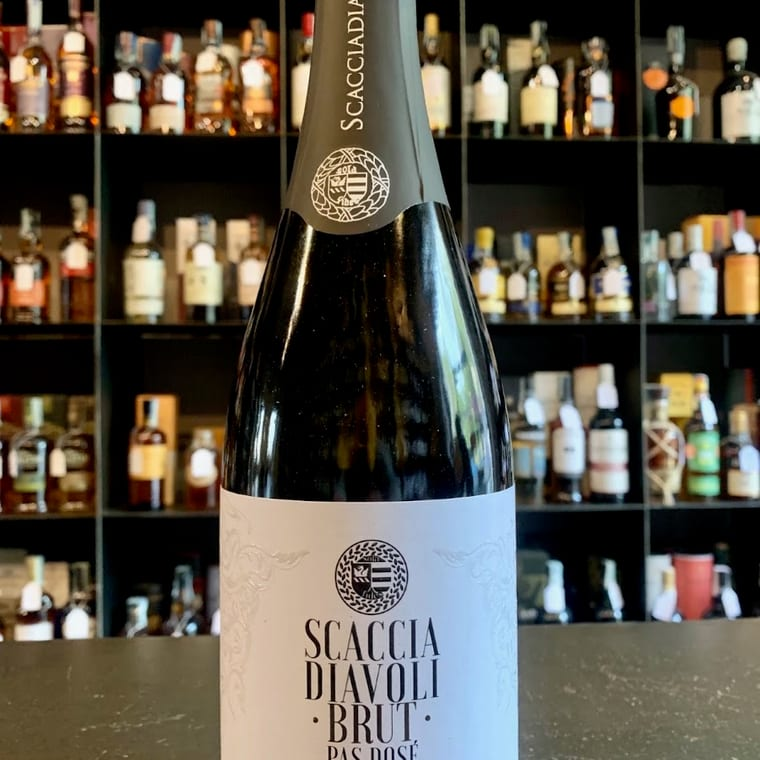
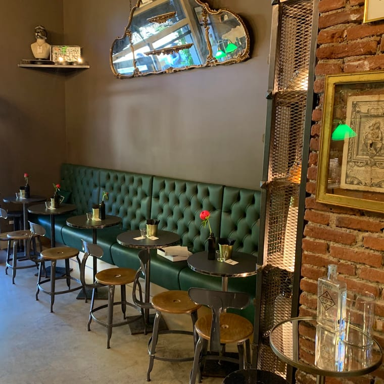
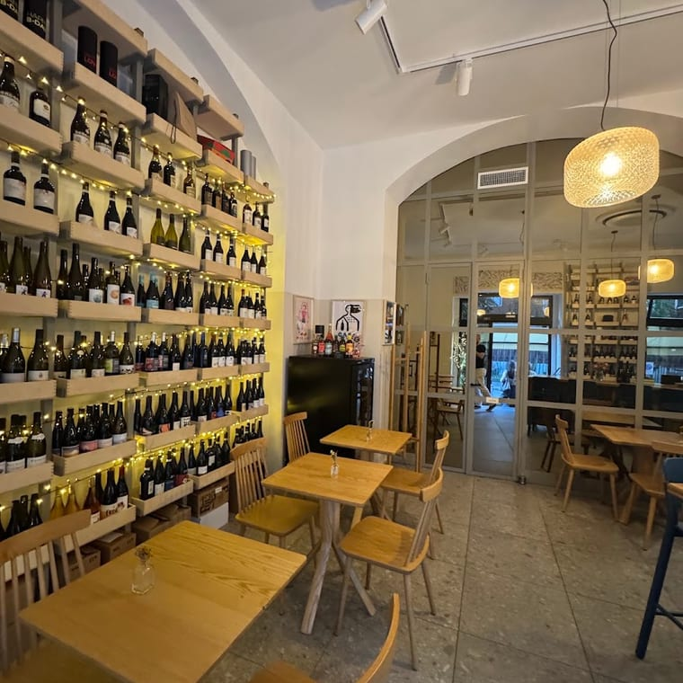
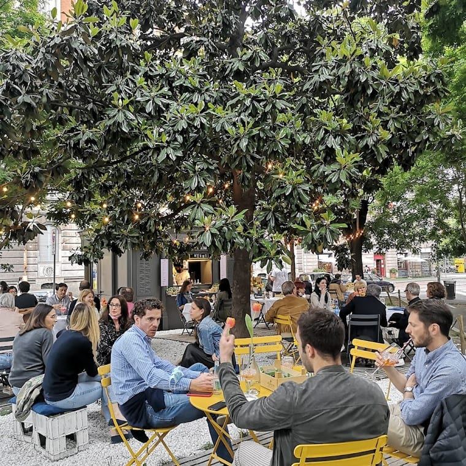
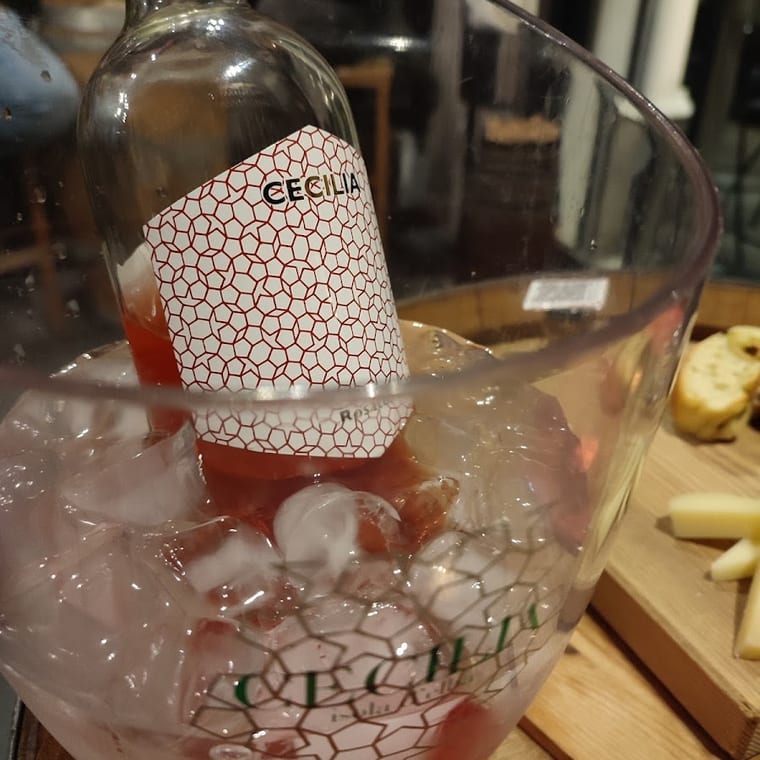
Dicono di noi
«Ottima selezione di vini non appartenenti alla grande distribuzione; ambiente molto piacevole e personale gentile e competente. Un eccellente locale in una splendida zona di Milano.»
Spicy Storm · Google
«Ci siamo trovati molto bene, la cucina vale i suoi prezzi! I ragazzi che lo gestiscono sono formali e sorridenti, una cosa rara ormai tra i locali della zona.»
Francesco T. · Google
«Ottima enoteca. Vasta scelta di vini e birre. Un bel posto dove gustare un buon calice e stuzzicare qualche tagliere di qualità: un aperitivo "giusto" e raffinato.»
Silvia R. · Local Guide
«Si possono degustare ottimi vini e birre in un ambiente davvero accogliente. Simpatici e preparati i due proprietari.»
Google
Dove & orari
Via Alberto da Giussano 1, 20145 Milano · a due passi da Piazzale Baracca e dalla fermata Conciliazione (M1)
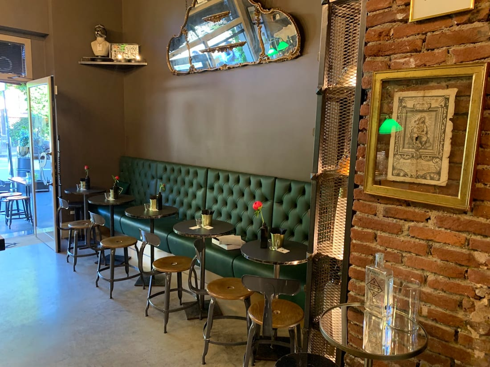
…
| Lunedì | 10–13 · 16:30–21:30 |
| Martedì | 10–13 · 16:30–22:00 |
| Mercoledì | 10–13 · 16:30–22:00 |
| Giovedì | 10–13 · 16:30–22:00 |
| Venerdì | 10–13 · 16:30–22:00 |
| Sabato | Chiuso |
| Domenica | Chiuso |
La mappa è di Google: aprendola, Google riceve il tuo indirizzo IP e può usare i suoi cookie.
Domande frequenti
Entrambe: il nome lo dice. L'uva sono i vini (circa 200 etichette, spesso fuori dalla grande distribuzione), il malto sono i whisky (un centinaio) e le birre artigianali. Tutto alla giusta temperatura, al grande bancone.
Sì: un aperitivo giusto e raffinato, degustazioni guidate e taglieri di qualità. Due proprietari che consigliano l'etichetta adatta a te.
Lunedì 10–13 e 16:30–21:30; da martedì a venerdì 10–13 e 16:30–22:00. Sabato e domenica siamo chiusi.
Sì: oltre alla mescita e all'aperitivo sul posto, vendiamo vino, whisky e birre da asporto.
In Via Alberto da Giussano 1 a Milano, a due passi da Piazzale Baracca e dalla fermata Conciliazione. Per informazioni chiama 02 3653 7698.